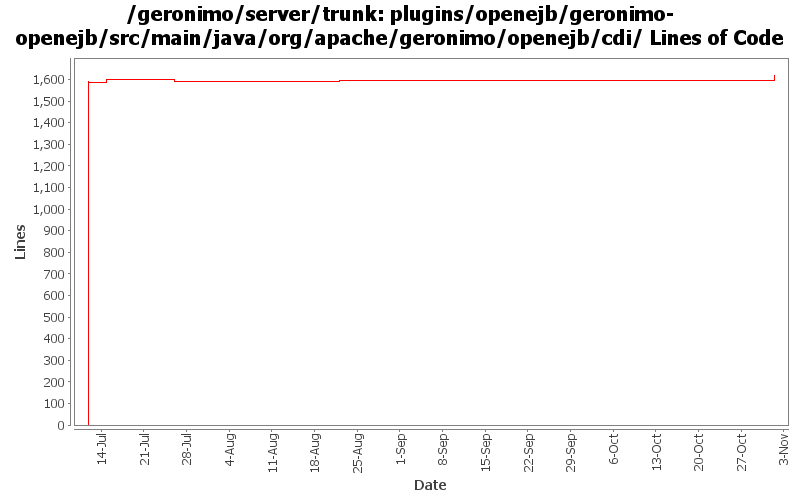

[root]/plugins/openejb/geronimo-openejb/src/main/java/org/apache/geronimo/openejb/cdi

| Author | Changes | Lines of Code | Lines per Change |
|---|---|---|---|
| Totals | 26 (100.0%) | 1753 (100.0%) | 67.4 |
| djencks | 17 (65.4%) | 1624 (92.6%) | 95.5 |
| xuhaihong | 5 (19.2%) | 102 (5.8%) | 20.4 |
| genspring | 3 (11.5%) | 22 (1.3%) | 7.3 |
| dblevins | 1 (3.8%) | 5 (0.3%) | 5.0 |
GERONIMO-6204 Decouple OpenWebBeans from web container
50 lines of code changed in 4 files:
No function change, format codes for the following changes
52 lines of code changed in 1 file:
GERONIMO-6117: OpenWebBeansPlugin load optimization
5 lines of code changed in 1 file:
api changed in owb side.
6 lines of code changed in 1 file:
GERONIMO-5893 only to add openwebbeans-jsf dependencies when there's webbeans in app.
16 lines of code changed in 2 files:
GERONIMO-5050 openwebbeans-ee-common dependency got left out moving to openejb, this makes PrincipalBean available
1 lines of code changed in 1 file:
GERONIMO-5050 really use only one owb context for the whole ear, and combine all the module info into it
29 lines of code changed in 2 files:
GERONIMO-5050 Continue integrating use of openejb owb integration
3 lines of code changed in 1 file:
GERONIMO-5050 Start of always using openejb for owb
1591 lines of code changed in 13 files: